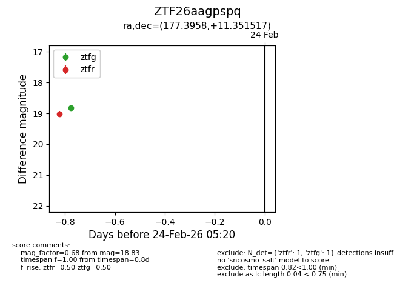
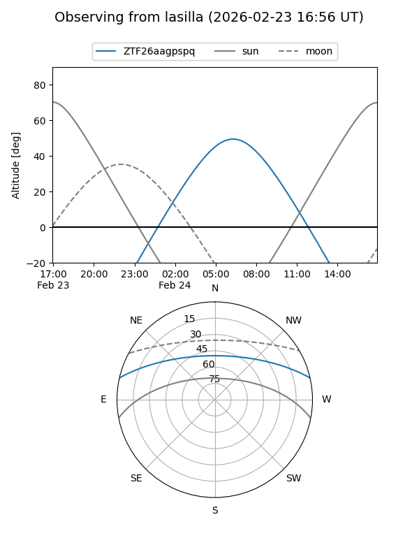
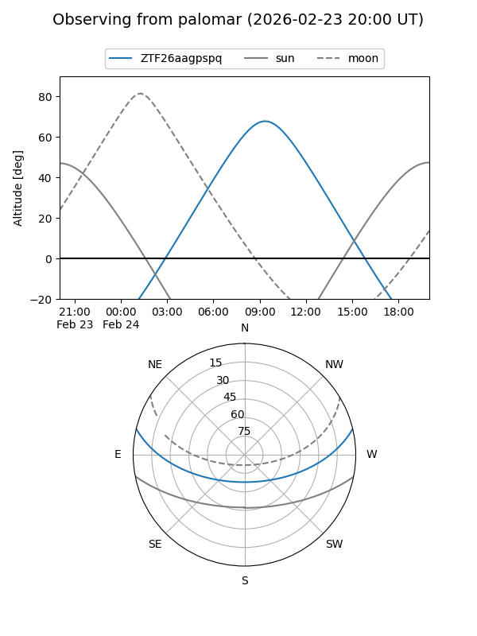

ZTF26aagpspq
Target ZTF26aagpspq at 2026-02-24 09:08
Aliases and brokers:
FINK: link
Lasair: link
ALeRCE: link
alt names
ZTF26aagpspq (ztf,fink_ztf)
Coordinates:
equatorial (ra, dec) = 177.3958,+11.35152
equatorial (HMS+DMS) = 11:49:35.00,+11:21:05.46
galactic (l, b) = (257.2998,+68.55061)
Flags:
Photometry:
last ztfg=18.83, ztfr=19.02
1 ztfg, 1 ztfr detections
Lightcurve

Visibility


Additional plots